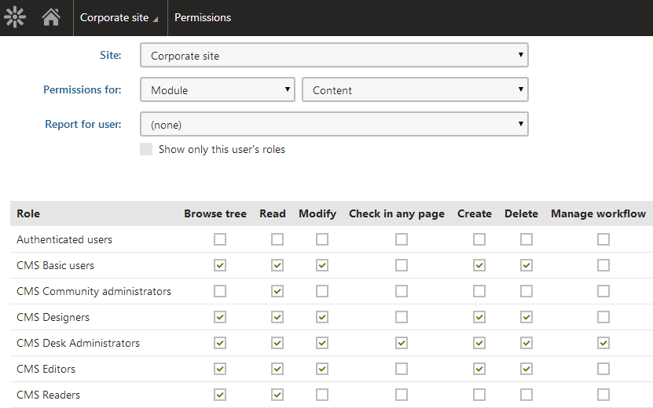

Permissions for all content
In the Permissions application, you can find a permission matrix for controlling role permissions to all pages within the content tree (in the Pages application).
To configure permissions for all content:
Open the Permissions application.
In the first Permissions for drop-down list, choose Module.
In the second drop-down list, choose Content.
The changes you make on the permission matrix apply immediately.

Permission matrix for pages
You can grant the following permissions to roles:
|
Browse tree |
Allows members of the role to view the page content tree in the Pages application (not necessarily the actual page content – that is determined by the Read permission). For users without this permission, the system blocks the entire Pages application. Users need the Browse tree permission to perform page management actions via the On-site editing interface. |
|
Read |
Allows members of the role to access and view the Page, Form and Properties tabs for pages in the Pages application. The Read permission is also required to access:
|
|
Modify |
Allows members of the role to make the following changes:
|
|
Check in any page |
Authorizes members of the role to perform the Check-in and Undo check-out actions on the Properties -> Versions tab. |
|
Create |
Allows members of the role to create pages of any page type in the content tree. |
|
Delete |
Allows members of the role to delete any page in the content tree. |
|
Manage workflow |
Allows members of the role to approve or reject any page at any workflow step on the Properties -> Workflow tab. Note: The Modify permission is required to move pages between workflow steps on the Page and Form tabs. |
|
Destroy |
Allows members of the role to destroy pages, i.e., delete without the Undo option. |
|
Modify permissions |
Allows members of the role to manage page-level permissions of any page on the Properties -> Security tab. Note that the Modify permission is not necessary for managing page-level permissions. |
|
Submit for translation |
Allows members of the role to create new language versions of pages using Translation services. |